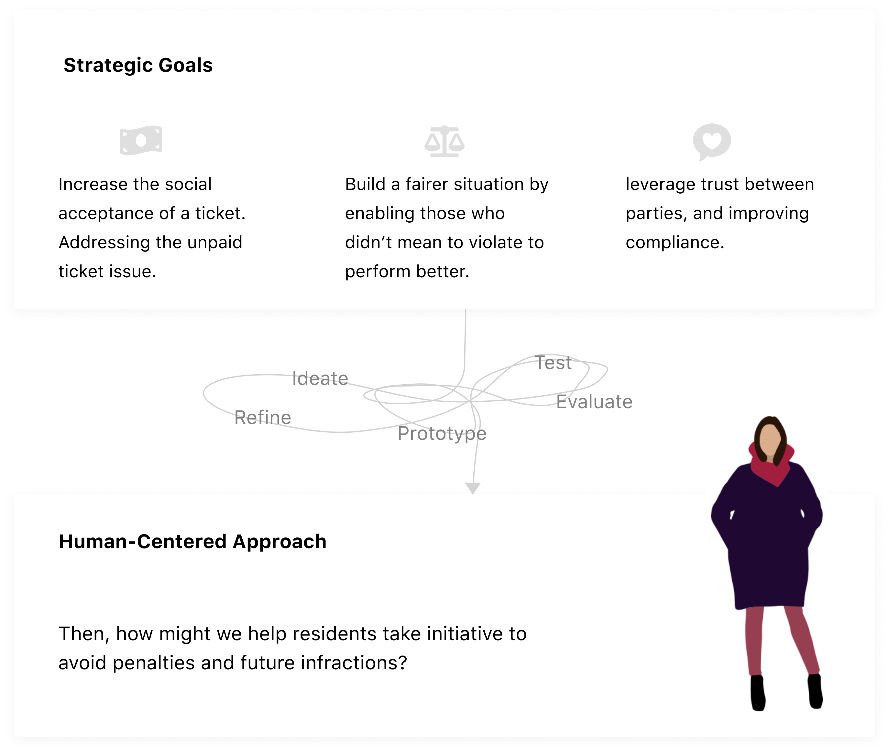
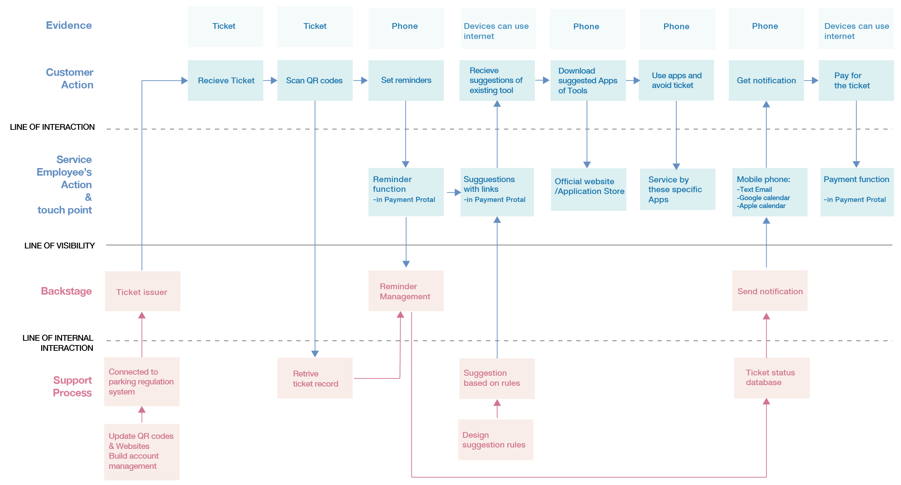
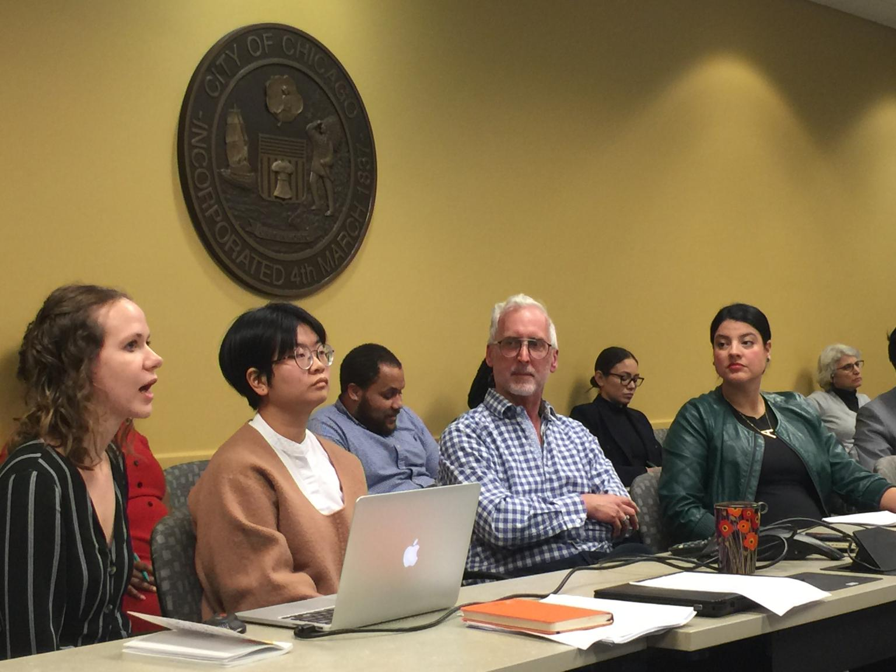

1.
What is our end goal?
“I lost my car and I lost my job. Now my family can’t eat
over a parking ticket.”
“I am 64 and I’m still on my payment plan of $1300.”
"The city is a bunch of fraud; they don't tell you (of your
ticket increase) until it doubles."
"It's all about the money. No other city is like this.
Chicago is all about the money. You can get a ticket for
anything."
2.
What lead to the problems?

After synthesizing our primary research, the pattern popped up. It shows that residents usually get trapped with this system by rather their little mistake, or confusion of the traffic rules -- some of these rules are even unreasonable. This little accident gives residents an initial non-moving violation ticket. Without dealing with it properly, the ticket can easily double, the penalty will come, eventually, debts become unaffordable.
The City of Chicago claims that they are trying hard to help these residents, while the residents don’t feel the help is available.
3.
What is the design challenge?

4.
Where we should intervene?

Most of our participants thoughts the fine of the non-moving violation is too high, while people with different income levels react so differently on the same amount of penalty. Unfortunately, for those who was already struggling with paying the initial ticket, more bill is coming.
5.
How can we help?
We created a service with which, residents can easily manage the payment process by following a step by step guide when they receive a ticket—and feel confident in avoiding such expensive vehicle violations moving forward.

By scanning the QR code or providing a driver's license,
residents can directly pay their tickets, get tailored and
practical suggestions to avoid similar violations, and get
help if they haven't yet decided whether to pay.
Residents can choose their preferred next step to deal
with a ticket. Along with the action they choose, we will
assist them through the whole process by providing relevant
information and reminding them of important dates.
Residents will get personalized messages and reminders
from the assistant, including the due date, important links,
and relevant ticket information.
6.
Service Blueprint

7.
Reflections
- Non-moving violation ticket and it's payment engage many stakeholders and was very complex from the beginning, so we simplified that as a two-side model, and focusing on the main conflicts to better solve the problem.
- Since the service is related to the penalty, obviously, many residents are quite resistant to that. No one is 100% rational people, so we should consider their emotions and how will emotions affect behavior - Behavior economics will play a key role in this situation.
- Dealing with conflicting situations like this, we should not be just engaged with fixing what is wrong, but we should always be aware of how can we make it even better.
Photo: Seminar in City Hall with Chicago Officer and Community Representatives